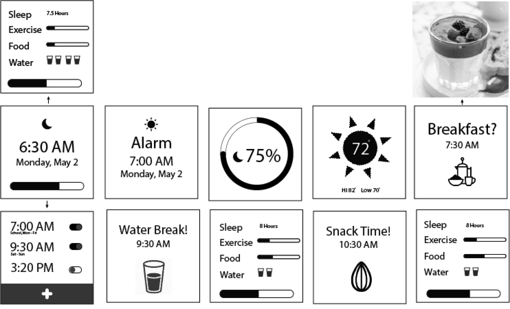
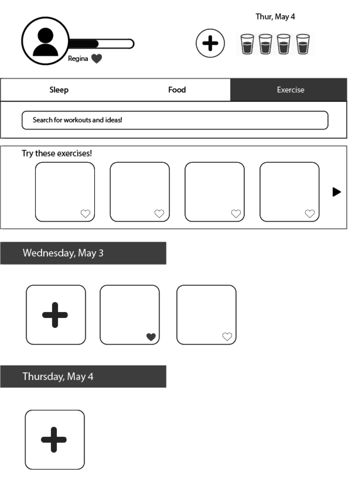
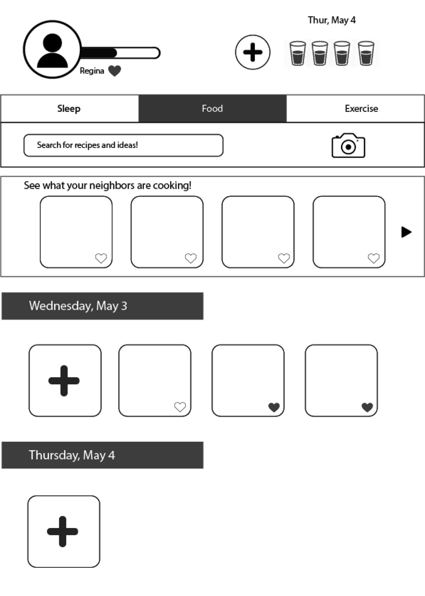
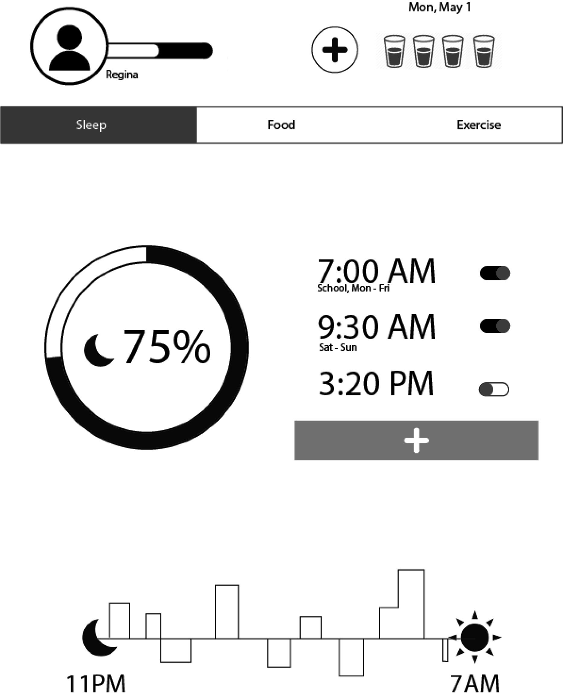
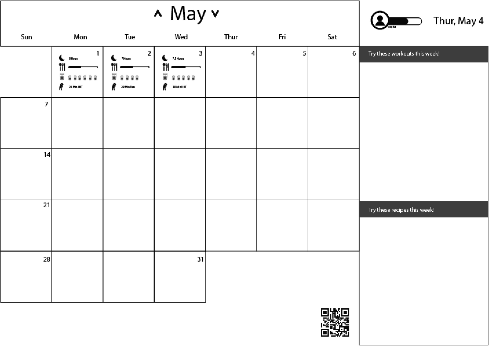

Persona: Regina is a fourth year college student at UCSD. Because of college, she has picked up some bad habits that contribute to an unhealthy lifestyle. She wants to be more healthy by building better habits but she doesn't really know where to start. She also works 30 hours in addition to school so she needs something that is accommodates her busy schedule.
Video:
PDF:




